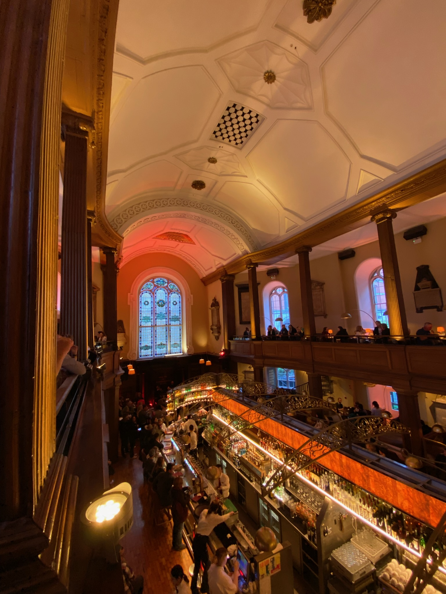

On our 6th and final day, we headed out to the Cliffs of Moher. The day we went was very windy, so it was a little scary standing right on the edge of the cliffs but it was a beautiful view regardless. There was also a tiny castle on a hill that had some old relics from the area. If you ever go to Ireland, this is a place you have to go.
After a long drive back from the cliffs, we headed to dinner at The Church. It's an old church that was renovated to be a restaurant, and the interior looks cool because of it. There was band playing live music that took requests so we got to hear them play some songs we liked. After dinner was over I went out to the pub with my older sister and some of her roommates until it was time to go to bed. The next day we flew back home and that was the end of my trip to Ireland!
